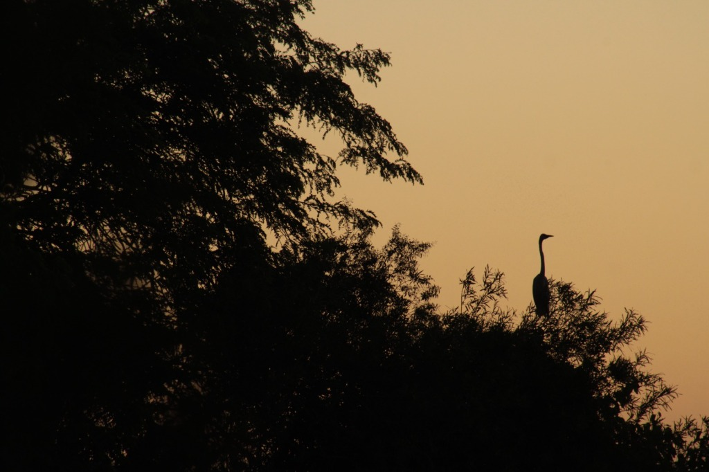

NATURALEZA Y SOBERANÍA
La Isla Martín García no es solo un pedazo de tierra en el agua; es un viaje en el tiempo envuelto en selva.
Imaginate un lugar donde los ecos de la historia argentina se mezclan con el aleteo de mariposas exóticas. Este destino, tesoro del Río de la Plata, te invita a una escapada que combina el misticismo del pasado con una naturaleza indomable.
Caminar por sus senderos es recorrer capítulos clave de nuestra identidad. Declarada Lugar Histórico Nacional, custodia los restos del antiguo presidio que albergó a presidentes como Yrigoyen, Perón y Frondizi.
En tu recorrido, te esperan paradas fotográficas obligatorias:
- El icónico Faro de la Armada.
- El legendario Cine Teatro “General Urquiza”.
- El penal naval y el cementerio, testigos silenciosos de otra época.
Si buscás desconexión, la primavera y el verano transforman la isla en un lienzo vivo. Con más de 150 especies de mariposas (incluida la espectacular Bandera Argentina) y una fauna aérea envidiable, es el Edén para los amantes de la fotografía y el avistaje. Sus playas, juncales y lagunas te regalan esa paz que solo el río sabe dar.
Explorala en bicicleta, recorré sus costas en kayak o acampá bajo las estrellas.
PARAÍSO RIOPLATENSE
Ubicada en la confluencia del Río Uruguay con el Río de la Plata, es un enclave histórico y reserva natural única. Famosa por haber servido de lazareto durante las epidemias de fin del siglo XIX y por haber albergado como prisioneros a los presidentes Hipólito Yrigoyen, Juan Domingo Perón y Arturo Frondizi.

🌿 Reserva Natural: Santuario de aves, mariposas y fauna silvestre